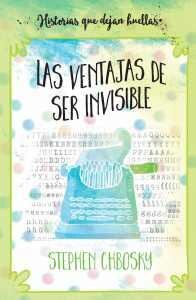
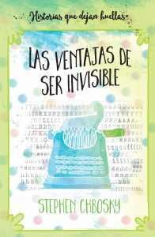
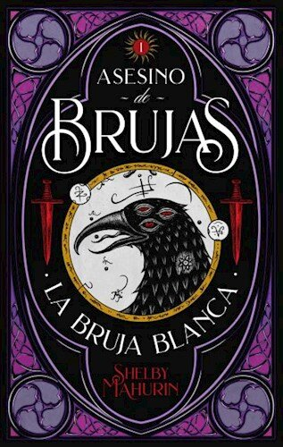
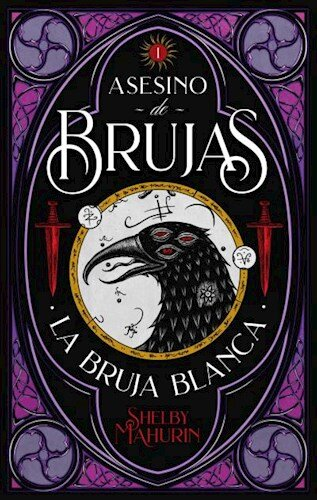
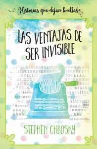
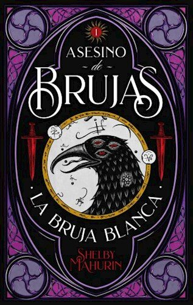

 



Reseña
La Otra vuelta de tuerca narra la historia de una joven institutriz quien se hace responsable del cuidado de dos niños huérfanos. Ella nota la presencia de fantasmas alrededor de la vida de los pequeños Flora y Miles, y se propone descubrir todos los detalles acerca del misterio que los rodea.

